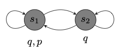
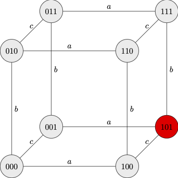
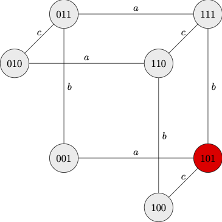
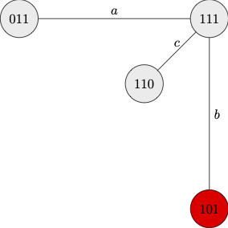

12 Epistemic Logic
One of the uses to which propositional modal logic has been put is to model certain propositional attitudes such as knowledge and belief.
Knowledge
To model knowledge, (Hintikka 1962) supplements the language of propositional logic with a family of propositional operators \(\textsf{K}_i\) for a family of epistemic agents \(i\in I\). A formula of the form \(\textsf{K}_i \varphi\) is read: “agent \(i\) knows that \(\varphi\).” Its dual, \(\neg \textsf{K}_i \neg\) is symbolized: \(\langle \textsf{K}_i \rangle\), is read: “for all agent \(i\) knows, \(\varphi\) remains open.”
Here is the picture as described by (Lewis 1986):
The content of someone’s knowledge of the world is given by his class of epistemically accessible worlds. These are the worlds that might, for all he knows, be his world; world \(w\) is one of them iff he knows nothing, either explicitly or implicitly, to rule out the hypothesis that \(w\) is the world where he lives.
In what follows we speak of states rather than worlds, and we take a state \(v\) to be accessible from another state \(u\) just in case whatever the agent knows to be the case in \(u\) is the case in \(v\).
We may use state models to model real-life examples. Suppose you have lost sight of your phone, which you think, you may have misplaced. In one state, your phone has been stolen (\(p\)), whereas in another state you simply forgot to take it with you and has not been stolen (\(\neg p\)). In all epistemically accessible states, however, your phone had been with you just yesterday night (\(q\)). That would place you in a state in which you know your phone had been with you yesterday night, \(K_i q\), but you do not know whether your phone has been stolen: \(\neg K_i p \wedge K_i \neg p\).
One way to model the situation is through a model, which consists of two states \(s_1\) and \(s_2\) corresponding to two epistemic alternatives: one in which your phone has been stolen, and one in which it has not been stolen.

Notice that \(K_i q\) is true at either state because \(q\) is true at all epistemically accessible states, yet neither \(K_i p\) nor \(K_i \neg p\) is true at either state.
Knowledge provides the ability to locate the actual world in the space of epistemic live options. Your lack of knowledge whether your phone has been stolen is represented by an inability to locate the actual world in the space of epistemic live options above. Nothing you knows enables you to distinguish \(s_1\) from \(s_2\).
We now explain what it is for a formula \(\varphi\) true at a state \(s\) in a model \(M\) of the form \((W, \{R_i: i\in I\}, V)\), written \(M, s \Vdash \varphi\), inductively.
We are now in a position to define truth in a model of epistemic logic.
These decisions are not inconsequential. For it follows that agents know all logical truths and that they know what follows from what they know. That is the framework vindicates a rule of necessitation and all substitution instances of axiom \(\textsf{K}\): \[\tag{N} \varphi / \textsf{K}_i \varphi \]
\[\tag{K} \textsf{K}_i(p \to q) \to (\textsf{K}_ip \to \textsf{K}_iq) \]
This involves a modicum of idealization: ordinary knowledge is not closed under logical consequence, and it is not all that plausible to think agents ordinarily know all logical truths.
One way to cope with this observation is to let \(\textsf{K}_i\) model not ordinary knowledge but rather knowledge by an idealized agent equipped with unlimited logical capabilities. Alternatively, one may instead take \(\textsf{K}_i\) to model implicit knowledge, which is what follows from knowledge we may reasonably attribute to ordinary agents even if it is not explicitly known by them.
The next step is to consider the epistemic interpretation of different modal axioms and to ask whether or not they are candidates for the logic of knowledge.
What is known is the case.
\[\tag{T} \textsf{K}_i p \to p \]
The principle that knowledge implies truth is virtually universally accepted, and a firm candidate for the logic of knowledge.
From a semantic point of view, \(\textsf{T}\) requires \(i\)-accessibility relations to be reflexive: a state itself is a live epistemic option for an agent.
Back to the example with which we started, consider what happens if I tell you ‘you do not know it, but your phone has been stolen’, which we could formalize \(p \wedge \neg K_i p\). That turns out to be something you can never know. For notice, for example, that \(K_i(p \wedge \neg K_ip)\) is falsified at all states in the model we considered above. More generally, the formula is false at all states of all state models. For if you knew \(p \wedge \neg K_i p\), then presumably, you would know both \(p\) and \(\neg K_ip\), which would mean \(K_ip\) and \(K_i\neg K_ip\). But the latter would only be true if \(\neg K_ip\), which would contradict the assumption that you know that \(p\).
What is known is known to be known.
\[\tag{\textsf{4}} \textsf{K}_i p \to \textsf{K}_i \textsf{K}_i p \]
This is the principle commonly known as the \(\textsf{K}\textsf{K}\)-principle. It encodes the view that knowledge is transparent to the agent: if you know something, then you know that you know. Presumably, the thought is that agents with unlimited introspection capabilities ought to be able to recognize their own knowledge: agents should be able to introspectively attend to their reasons for belief, which should be conclusive in cases of knowledge and not defeasible by new information.
From a semantic point of view, \(\textsf{4}\) requires the \(i\)-accessibility relations to be transitive: if a state \(t\) is an epistemic live option for \(i\) at \(v\), and \(v\) is a live option for \(i\) at \(u\), then \(t\) is a live option for \(i\) at \(u\).
(Hintikka 1962) adopted axioms \(\textsf{T}\) and \(\textsf{4}\) and identified \(\textsf{S4}\) as a candidate logic for knowledge. His reasons for that is that he regarded axioms \(\textsf{B}\) and \(\textsf{5}\) as implausible epistemic principles.
What is the case is known to be open.
\[\tag{$\textsf{B}$} p \to \textsf{K}_i \langle \textsf{K}_i \rangle p \]
This means that whatever is the case is known to be open as far as one knows. One way to cast doubt upon that principle is by considering the dual: \[\tag{$\textsf{B}_\Diamond$} \langle \textsf{K}_i \rangle \textsf{K}_i p \to p \]
You may think that nothing you know rules out that you do know that you left your phone behind back in the classroom. But according to \(\textsf{B}_\Diamond\), that is only the case if you did in fact leave your phone behind in your classroom. If you did not, then what you know already rules out that you know that you left the phone behind in the classroom.
The semantic counterpart of these observations is that we should not automatically rule out failures of symmetry for \(i\)-accessibility relations: from the fact that \(v\) is an epistemic live option for the agent at \(u\), we cannot conclude that \(u\) is an epistemic live option for the agent at \(v\).
To the extent to which \(\textsf{KTB4}\) is equivalent to \(\textsf{KT5}\) or \(\textsf{S5}\), the above considerations extend to axiom \(\textsf{5}\), which in the presence of \(\textsf{T}\) would give us \(\textsf{B}\).
What is open is known to be open.
\[\tag{$\textsf{5}$} \langle \textsf{K}_i\rangle p \to \textsf{K}_i \langle \textsf{K}_i \rangle p \]
There are cases in which agents take themselves to know something that is not in fact the case. Because knowledge entails truth, it would be false in that case that the agents know. But the agents might not have access to that information: it may be open to them that they know despite the fact that they do not know that it is open to them to know. One way to put it is that \(\textsf{5}\) would require agents to be immune to error of the sort described, which is again quite implausible.
12.1 Information Flow
The insight behind the possible worlds semantics for epistemic logic is that agents locate themselves in the space of epistemic live options by excluding states of the world as live options in light of new information. The Muddy Children puzzle illustrates the dynamic aspect of this update mechanism:
The example raises a number of questions:
Did the children learn anything new after the announcement that one of them was muddy?
What changed between the initial request when no one stepped forward and the later one when two muddy children did?
How did the two muddy children come to know that they had mud in their foreheads?
Here is a diagrammatic representation of the situation before the initial announcement.
|  |
| Before Announcement A |
We represent the relevant states of information with respect to the question at hand by ordered triples of digits, which encode the state of each children in that order. Thus for example:
- \(101\) encodes the actual state of the world on which \(a\) is muddy, \(b\) is not muddy, and \(c\) is muddy.
- \(111\) encodes an epistemic live option for \(b\) (though not for \(a\) or \(c\)) on which all three children are muddy.
- \(001\) encodes an epistemic live option for \(a\) (though not for \(b\) or \(c\)) on which only \(c\) is muddy.
The eight nodes correspond to eight states, which consist of different distributions of mud across the children. The nodes are connected by different accessibility relations, which correspond to each child as an epistemic agent. We assume that each relation is reflexive and symmetric: when an edge labeled \(a\), for example, connects two nodes, the two states are indistinguishable as far as \(a\) is concerned.
The effect of the announcement \(A\) is to let the children exclude \(000\) as a live epistemic option.
|  |
| After Announcement A |
While announcement \(A\) excludes \(000\) as actuality, none of the children regarded \(000\) as an epistemic live option. That is because each children is able to see mud in the forehead of at least one child.
The children learn valuable information from the fact that no one steps forward after request \(B\) is made. This is because the children now learn that none of the other two children know that they are muddy. This suffices to rule out states at which there is exactly one muddy child.
|  |
| After Request B |
After request B, \(a\) and \(c\) will simultaneously step forward since they find no epistemically open alternative at which they are not muddy. On the other hand, \(b\) will stay back because she cannot tell which of \(101\) or \(111\) are actual. That is, \(b\) stays back because \(b\) cannot rule out that she is not is muddy.
That allows the children to eliminate all epistemic alternatives to \(101\). So, the epistemic situation after the second request is that the children know exactly who is muddy and who is not muddy.
| After Request C |
Nothing changes when we complicate the situation. If, for example, seven out of ten children happened to be muddy, then no one would step forward until after the guardian makes the seventh request at which point exactly those seven children would simultaneously step forward.
12.2 Common Knowledge
What do the children learn after the first announcement? Notice that they all know that at least one child is muddy even prior to the announcement. We may use \(E\varphi\) as an abbreviation for the conjunction: \[ \bigwedge_{i\in I} \textsf{K}_i \varphi, \] which is read: “it is generally known that \(\varphi\)’’. General knowledge is not sufficient for common knowledge. A group has common knowledge that \(\varphi\) if they all know that \(\varphi\), they all know that they all know that \(\varphi\), they all know that they all know that they all know that \(\varphi\), etc.
Let us revisit the initial model for the Muddy Children Puzzle and let \(p_1\), \(p_2\), and \(p_3\) be true at exactly states at which each of \(a\), \(b\), and \(c\), respectively, are muddy, then we may express the fact that at least one child is muddy by means of the disjunction \(p_1 \vee p_2 \vee p_3\). Notice that that formula is true when evaluated at state \(101\): \[ M, 101 \Vdash \textsf{E} (p_1 \vee p_2 \vee p_3). \]
That is because: \[ M, 101 \Vdash \textsf{K}_a (p_1 \vee p_2 \vee p_3) \wedge \textsf{K}_b (p_1 \vee p_2 \vee p_3) \wedge \textsf{K}_c (p_1 \vee p_2 \vee p_3). \] But although it is generally known that at least one child is muddy, it is not common knowledge that at least one child is muddy.
Common knowledge plays a crucial role in social interaction. When we drive, for example, we rely on the fact that it is common knowledge that a red light requires drivers to stop. It is not sufficient for a pedestrian to know that, but it is important to know that drivers know that and for them to know that everyone knows that, etc.
How should we incorporate common knowledge in the language of epistemic logic? There is no hope for an explicit definition of common knowledge in terms of knowledge, for that would presumably require an infinite conjunction, which is not available in the language. We will instead expand the language of epistemic logic with a common knowledge operator, \(\textsf{C}\varphi\), reqd: “it is common knowledge that \(\varphi\).
Once we do this, we must explain how to evaluate a formula of the form \(\textsf{C}\varphi\) at a state \(s\) of a model \(M\) of the form \((W, \{R_i: i\in I\}, V)\). To that purpose, we will expand the definition of truth at a state with a clause for the newly added common knowledge operator.
a state \(t\) is reachable from \(s\) in one step, in symbols, \(sR^1t\), iff \(sR_it\) for some \(i\in I\). In the case at hand, one state is reachable from another in one step if it is \(a\)-accessible from the other or it is \(b\)-accessible from the other or, finally, it is \(c\)-accessible from the other.
a state \(t\) is reachable from \(s\) in \(n+1\) steps, in symbols, \(sR^{n+1}t\), iff for some step \(u\), \(sR^{n}u\) and \(uR_it\) for some \(i\in I\).
For purposes of illustration, notice that in the initial model for the Muddy Children Puzzle \(000\) is reachable from \(101\) in two steps: \[ 101 R_c 100 \ \ \text{and} \ \ 100 R_a 000 \] \[ 101 R_a 001 \ \ \text{and} \ \ 001 R_c 000 \]
That is, there are two-step paths one may take from \(101\) to \(000\).
Finally,
- a state \(t\) is reachable from \(s\) in a finite number of steps, in symbols \(R^\star\), iff there is some \(n\) such that \(t\) is reachable from \(s\) in \(n\) steps.
Here is the clause for \(\textsf{C}\varphi\) in the definition of truth at a state: \[ \begin{array}{lll} M, s \Vdash \textsf{C} \varphi & \text{iff} & \text{for every} \ u \in W \ \text{s.t.} \ R^\star su, \ M, u \Vdash \varphi\\ \end{array} \]
In other words, \(\textsf{C}\varphi\) is true at a state \(s\) iff \(\varphi\) is true at every state \(t\) reachable from \(s\) in a finite number of steps.
Let us revisit the model for the Muddy Children Puzzle prior to the first announcement:
| Before Announcement A |
When we apply the definition of truth at a state to the case at hand, we find: \[ M, 101 \nVdash \textsf{C} (p_1 \vee p_2 \vee p_3). \] The reason is that the state \(000\), which falsifies the disjunction, is reachable from \(101\) in two steps.
The situation changes once the children eliminate that option after the announcement. One of the effects of the announcement in the Muddy Children Puzzle is to make it common knowledge that at least one child is muddy: it is not just that all children know that at least one child is muddy, all children now know that all children know, and all children know that all children know that they know that, etc.
| After Announcement A |
If we use \(M'\) to refer to the model that results, we find \[ M', 101 \Vdash \textsf{C} (p_1 \vee p_2 \vee p_3). \]
This is because the disjunction is true at every state reachable from \(101\) in the new model.
After the first request is made without any children stepping forward, the children are able to rule out as epistemic alternatives states in which only one child is muddy.
| After Request B |
At this point, the fact that two children are muddy now becomes common knowledge, since only states where two children are muddy are reachable from the state of evaluation in a finite number of steps.
The actual distribution of mud becomes common knowledge after the two children step forward after the thrid request. That is because they are all left with a single epistemic live option:
| After Request C |
The accessibility relation for common knowledge, \(R^\star\), will of course be reflexive and transitive. It will be transitive by definition, but it will inherit reflexivity from the reflexivity of each of the \(i\)-accessibility relations. Whether the relation will in addition be symmetric or euclidean will crucially depend on the structure of the individual \(i\)-accessibility relations.
One axiomatization of the logic of common knowledge employs an an axiom and a rule of inference: \[\tag{Fixed Point} \textsf{C}p \to \textsf{E}(p \wedge \textsf{C}p) \] \[\tag{Induction} \varphi \to \textsf{E}(\psi \wedge \varphi) / \varphi \to \textsf{C} \psi \]
The fixed point axiom regards common knowledge as a fixed point of the function that maps a formula \(\varphi\) to \(\textsf{K}_i(\varphi \wedge \textsf{C}\varphi)\).
The rule of inference is called an induction rule because the antecedent provides the crucial ingredient for an inductive argument for all instances of the schema: \[ \varphi \to \textsf{E}^n(\psi \wedge \varphi), \] which guarantees the conditional \[ \varphi \to \textsf{C}\psi. \] For suppose the conditional \(\varphi \to \textsf{E}(\psi \wedge \varphi)\) is valid. Then if \(\varphi\) is true at \(s\), \(\textsf{E}(\psi \wedge \varphi)\) is true at \(s\), which means that if \(t\) is reachable from \(s\) in one step, then \(\varphi\) is true at \(t\). So, \(\textsf{E}(\psi \wedge \varphi)\) is true at \(t\). If \(u\) is now reachable from \(t\) in one step, then \(\textsf{E}(\psi \wedge \varphi)\) will be true at \(t\), etc.
We are in a position to prove some theorems of the logic of common knowledge.
\(\vdash \textsf{C}p \to \textsf{E} \textsf{C}p\)
Proof. This is a simple consequence of the Fixed Point axiom: \[ \begin{array}{lllll} 1 & & \textsf{C}p \to \textsf{E}(p \wedge \textsf{C}p) & \text{Fixed Point}\\ 2 & & \textsf{E}(p \wedge \textsf{C}p) \to (\textsf{E} p \wedge \textsf{E} \textsf{C}p) & \textsf{K} \ 1\\ 3 & & \textsf{C}p \to \textsf{E} \textsf{C}p & \textsf{PL} \ 1, 2\\ \end{array} \]
\(\vdash \textsf{C}p\to \textsf{C C}p\)
Proof. This is a simple consequence of the rule of inference for common knowledge. \[ \begin{array}{lllll} 1 & & \textsf{C}p \to \textsf{E} \textsf{C}p & \\ 2 & & \textsf{C} p \to (\textsf{C}p \wedge \textsf{C} p) & \textsf{PL} \\ 3 & & \textsf{EC} p \to \textsf{E} (\textsf{C}p\wedge \textsf{C} p) & \textsf{PL}\\ 4 & & \textsf{C} p \to \textsf{E} (\textsf{C}p \wedge \textsf{C} p) & \textsf{PL} \ 1, 3\\ 5 & & \textsf{C} p \to \textsf{CC}p & \textsf{RC}[\textsf{C}p/\varphi, \textsf{C}p/\psi] \ 4 \end{array} \]